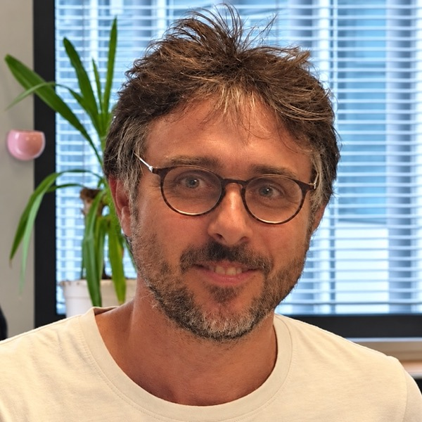
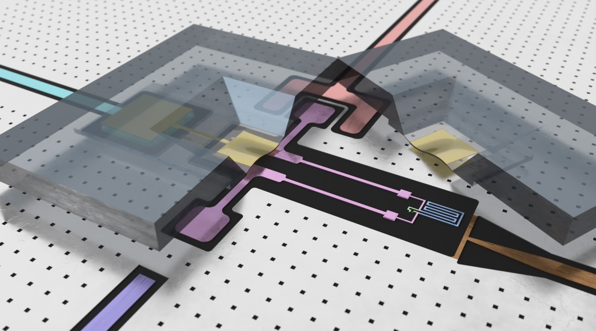
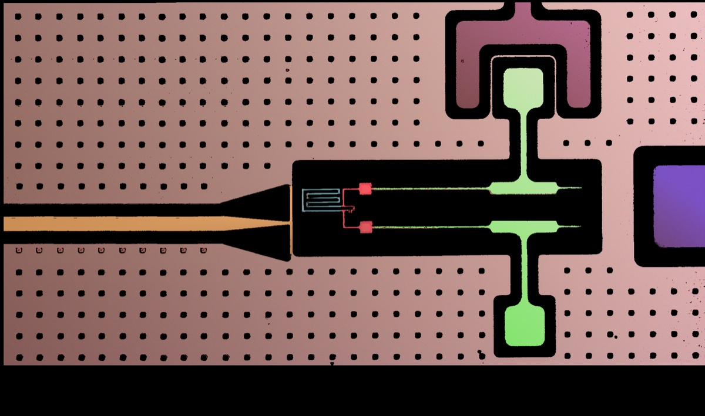
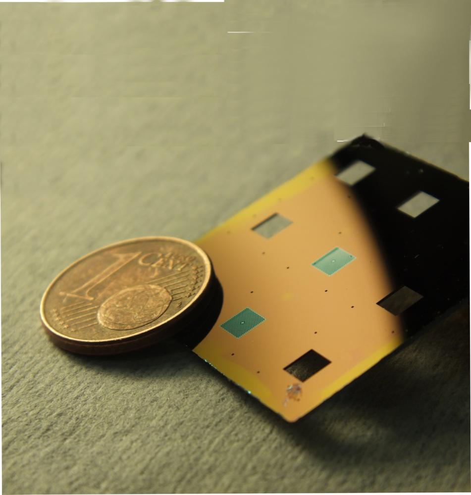

CNRS researcher · QUANTIC team, Laboratoire de Physique de l'ENS, Paris
Hybrid quantum systems: macroscopic mechanical resonators driven into the quantum regime by superconducting circuits.
Mechanical resonators can now be fabricated with quality factors above a billion and lifetimes of seconds. I couple such massive, ultra-coherent oscillators to superconducting qubits in order to prepare, control and measure their quantum states, with applications to quantum sensing, quantum memories and fundamental tests of quantum mechanics with massive objects.



Fluxonium and high-impedance circuits coupled to ultra-coherent membranes and drums.
AC-charge detection, rf-to-microwave transduction, microwave photon counting.
Dissipative stabilization, squeezed cat qubits, mechanical modes as quantum memories.
Massive quantum oscillators to probe gravity-related wavefunction collapse.
ANR PRCE · partner · 150 k€
ANR PRCE · PI · 640 k€
Sorbonne Université Émergences · PI · 90 k€
SIRTEQ (DIM Île-de-France) equipment programme · PI · 280 k€
H2020 Marie Curie Actions — Innovative Training Networks (ETN) ITN · partner
ANR JCJC · PI · 300 k€
Léo Balembois (2023 – 2025), Xu Chen (2015 – 2017)
Raphaël Lescanne, Samuel Deléglise, Emmanuel Flurin, Zaki Leghtas
FPGA-based digital feedback control for quantum-optics experiments on the Red Pitaya board. Neuhaus, Croquette, Metzdorff, Chua, Jacquet, Journeaux, Heidmann, Briant, Jacqmin, Cohadon, Deléglise, Rev. Sci. Instrum. 95, 033003 (2024)
31 articles excluding large collaborations, plus 179 papers as a member of the Virgo collaboration (first detections of gravitational waves). Citation data: Google Scholar.